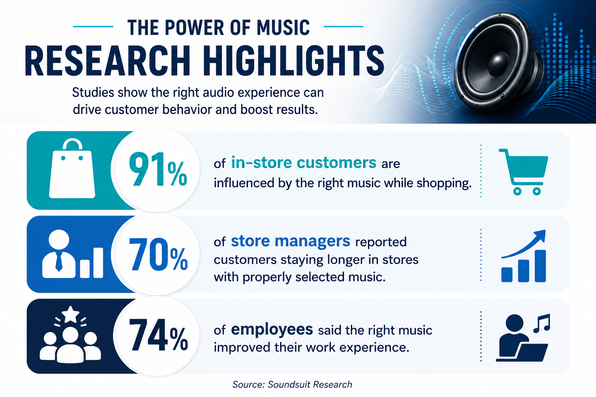
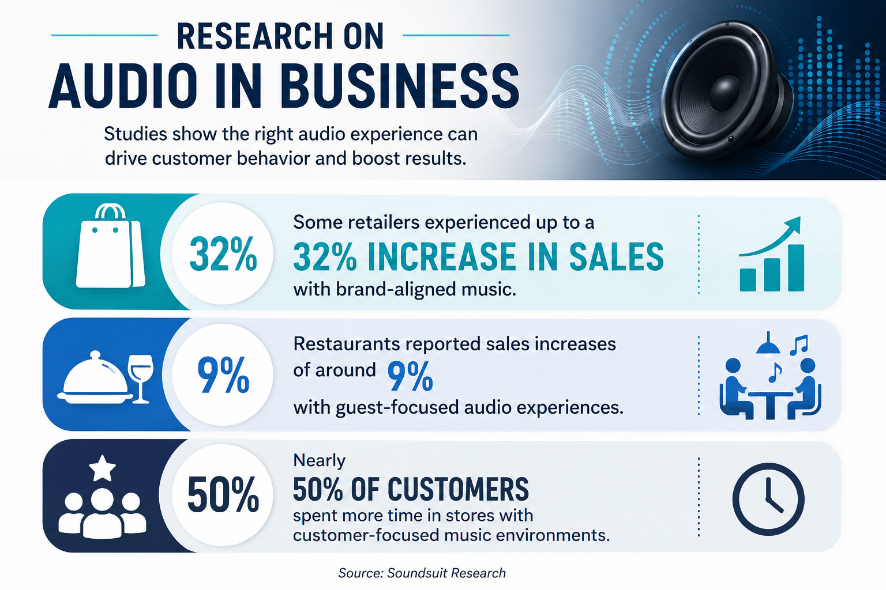

SHARE
The right sound system can completely transform a business environment. Whether it’s background music in a retail store, crystal-clear audio in a conference room, or immersive sound in a restaurant or entertainment venue, high-quality audio creates a more professional and engaging experience for both customers and employees.
But choosing the right commercial sound system isn’t always easy. With so many speaker types, layouts, and technologies available, businesses often end up with systems that sound uneven, lack clarity, or simply don’t fit the space properly. That’s why expert planning and professional installation matter.
Why Sound Quality Matters in Business
Audio plays a bigger role in business than many people realize. Studies show that the right music and sound environment can directly influence customer behavior, employee morale, and overall business performance.
Research has found:
- • 91% of in-store customers are influenced by the right music while shopping
- • 70% of store managers reported customers staying longer in stores with properly selected music
- • 74% of employees said the right music improved their work experience
Another retail study found that shoppers often spend more time browsing when the audio environment feels comfortable and engaging.
For businesses, sound is no longer just background noise—it’s part of the customer experience.

Choosing the Right System for Your Space
Every business has different audio needs. A conference room requires something completely different from a restaurant patio or retail showroom.
Factors to consider include:
- • Room size and layout
- • Ceiling height and acoustics
- • Indoor or outdoor installation
- • Number of listening zones
- • Volume requirements
- • Wired vs. wireless systems
The goal is balanced, clear audio throughout the space—not sound that’s too loud in one area and too weak in another.
Popular Business Sound System Options
Ceiling Speakers
Ceiling-mounted speakers are ideal for offices, retail stores, and restaurants because they provide clean, evenly distributed audio while maintaining a professional appearance.
Wall-Mounted Speakers
Wall-mounted systems work well in larger spaces where stronger directional sound is needed.
Conference Room Audio Systems
Modern conference rooms benefit from integrated systems that support:
- • Video conferencing
- • Wireless presentations
- • Clear voice pickup
- • Distributed room audio
Outdoor Audio Systems
Restaurants, patios, event spaces, and commercial properties often need weather-resistant outdoor speakers that deliver consistent sound coverage.
The Business Impact of Better Audio
Sound can directly affect customer perception, sales, and productivity.
Research shows:
- • Some retailers experienced up to a 32% increase in sales with brand-aligned music
- • Restaurants reported sales increases of around 9% with guest-focused audio experiences
- • Nearly 50% of customers spent more time in stores with customer-focused music environments
Another retail study found that shoppers often spend more time browsing when the audio environment feels comfortable and engaging.
In office environments, meeting room comfort and environmental quality have also been linked to improved productivity and collaboration.

Why Professional Design Makes a Difference
One of the biggest mistakes businesses make is underestimating the importance of system design.
Without proper planning, you may experience:
- • Dead zones or uneven sound
- • Echo and feedback issues
- • Poor microphone performance
- • Distorted audio at higher volumes
- • Difficult controls and unreliable connectivity
Professional installation ensures the system is optimized for your environment and business needs.
Smart Audio Integration
Modern sound systems can integrate with:
- • Smart controls
- • Touchscreen panels
- • Mobile apps
- • Voice assistants
- • Scheduling systems
- • Video conferencing platforms
This allows businesses to manage audio easily and efficiently from a centralized interface.
Sound Systems for Different Industries
Offices & Conference Rooms
Clear audio improves collaboration, presentations, and hybrid meetings.
Retail Stores
Background music helps shape customer mood and enhance the shopping experience.
Restaurants & Cafés
Balanced audio creates atmosphere without overpowering conversations.
Fitness Centers
Powerful sound systems keep energy levels high during workouts and classes.
Hospitality & Hotels
Multi-zone audio creates a polished guest experience throughout the property.
Ceiling Speakers for a Restaurent Client in Dunwoody, GA
The Importance of Scalability
As businesses grow, their technology needs change. A professionally designed sound system should allow for future expansion without requiring a complete overhaul.
Scalable systems make it easier to:
- • Add additional speakers
- • Expand into new rooms or zones
- • Upgrade technology over time
- • Integrate with future smart systems
Why Businesses Trust Professional Installation
Commercial audio systems involve more than simply mounting speakers. Proper placement, acoustic planning, wiring, tuning, and integration all play a role in achieving professional-quality sound.
Working with professionals ensures:
- • Clean, organized installation
- • Reliable system performance
- • Optimized sound coverage
- • Easy-to-use controls
- • Long-term reliability
A great sound system does more than play audio—it enhances communication, improves customer experiences, and creates a more professional environment for your business.
Whether you’re upgrading a conference room, designing a retail audio system, or building a fully integrated commercial setup, investing in expert guidance and professional installation can make all the difference in achieving truly pitch-perfect sound. With the right setup, your business won’t just sound better—it will perform better too.